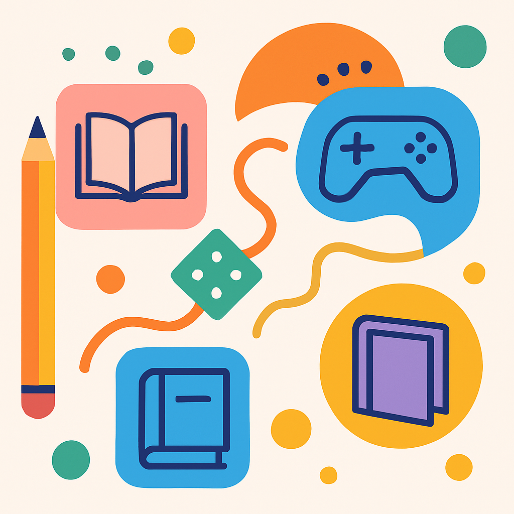

1) ¿En qué se diferencia la gamificación del juego?
Explora cada pestaña para ver definición, elementos y ejemplos.
Definición
Actividad o sistema con reglas, una meta explícita y un bucle de retroalimentación en el que los participantes se involucran voluntariamente para alcanzar un objetivo (Ordás, 2016).
- Meta clara
- Reglas explícitas
- Feedback y estado
- Voluntariedad
Ejemplo educativo
Serpientes y escaleras para practicar sumas y estrategias sencillas.
Definición
Metodología que aplica elementos y dinámicas propios de los juegos (puntos, insignias, niveles, retos y narrativa) en contextos no lúdicos para motivar conductas y aprendizajes (Mosquera Gende, 2019; Borrás Gené, 2015).
- Puntos, insignias, niveles
- Retos con progreso
- Tablón/ranking
- Narrativas breves
Ejemplo educativo
Otorgar insignias por entregar tareas de lectura a tiempo y subir de nivel por constancia.
Definición
Metodología que utiliza juegos completos (comerciales o diseñados ad hoc) como recurso central para alcanzar objetivos curriculares; el contenido se adapta al juego (Mosquera Gende, 2019; Bosco Global, 2021).
Ejemplo educativo
Minecraft: Education Edition para explorar geometría, medidas y trabajo colaborativo.
2) ¿Qué relación existe entre la Gamificación y el ABJ?
Ambos aprovechan el poder motivador del juego; difieren en su implementación y en el rol del juego en la actividad (Mosquera Gende, 2019; Bosco Global, 2021).
Coincidencias
- Motivan
- Fomentan participación
- Permiten feedback
Diferencias
- Gamificación: añade elementos
- ABJ: el juego es el recurso central
Diseño
- Gamificación: mecánicas + progreso
- ABJ: reglas del juego + objetivos
3) Caso: Escaleras Piano
El experimento de las Escaleras Piano de The Fun Theory transformó una escalera convencional en un teclado musical interactivo. Al añadir sonidos a cada peldaño se logró que el 66 % de las personas eligiera las escaleras normales. Esta intervención no es un juego completo, sino una estrategia gamificada que añade elementos lúdicos a un hábito cotidiano para modificar un comportamiento.
- Propósitos: promover el uso de las escaleras tradicionales, fomentar el ejercicio y concienciar sobre el sedentarismo mediante un diseño atractivo.
- Elementos de gamificación: retroalimentación sonora, sorpresa y curiosidad, reto implícito, diversión y motivación intrínseca.
4) ¿Cómo aporta la gamificación a la didáctica del siglo XXI?
Motivación y compromiso
Desafíos, recompensas y narrativa aumentan la participación sostenida.
Evaluación formativa
Indicadores de progreso y feedback inmediato orientan la mejora.
Personalización
Niveles y rutas adaptadas a ritmos y estilos diversos.
Competencias del siglo XXI
Creatividad, resolución de problemas, colaboración, comunicación.
Datos para la mejora
Registros de interacción para tomar decisiones pedagógicas.
Diversos estudios coinciden en que la gamificación puede aumentar la motivación y el rendimiento al combinar mecánicas lúdicas con evaluación formativa. Por ejemplo, investigaciones en contextos de enseñanza de matemáticas muestran que una mayor presencia de elementos de gamificación y de evaluación formativa en entornos digitales mejora significativamente el aprendizaje (Prada Núñez, Hernández Suárez & Avendaño Castro, 2020). La gamificación utiliza elementos como puntos, insignias, niveles y narrativa para involucrar al alumnado y resolver problemas en contextos no lúdicos (Borrás Gené, 2015). Manuales de aprendizaje basado en juegos destacan que estas dinámicas promueven habilidades del siglo XXI —creatividad, pensamiento crítico, comunicación y trabajo en equipo— al tiempo que mantienen la coherencia con los objetivos curriculares (Bosco Global, 2021). Además, las tendencias en analítica del aprendizaje indican que los sistemas gamificados permiten recopilar datos de interacción para retroalimentación inmediata y mejora continua del proceso de enseñanza‑aprendizaje (Prada Núñez et al., 2020).
5) Proyecto gamificado: hábitos de lectura con cómic
Este proyecto propone fomentar hábitos de lectura mediante un recorrido gamificado por la lectura de un cómic. La narrativa de la Liga de Lectores convierte a cada participante en un héroe que fortalece su poder al explorar mundos de historietas y superar misiones. Se implementan mecánicas de gamificación como puntos y niveles, insignias, retos semanales, ranking por equipos y progreso visible. El proyecto utiliza cómics físicos o digitales, formularios en línea y un tablero de progreso con apoyo de la biblioteca. La evaluación se realiza con una rúbrica o un portafolio de evidencias y un cronograma que incluye una semana de diagnóstico y selección; semanas 2–4 para lectura del primer cómic, quiz y reseña; semanas 5–7 para una segunda lectura; y una semana final de evaluación y cierre reflexivo. Los roles incluyen al docente (facilita y retroalimenta), a los estudiantes (lectores‑creadores) y a la familia (apoyo). La accesibilidad se garantiza con textos alternativos, alto contraste y navegación por teclado. Este diseño se inspira en investigaciones que destacan el potencial formativo de la gamificación (Prada Núñez et al., 2020) y en manuales de ABJ que promueven el uso de cómics y narrativas como herramientas educativas (Bosco Global, 2021).
6) Mini‑quiz (auto‑evaluación)
En gamificación se usa un juego completo con sus reglas como recurso central.
El ABJ se centra en integrar elementos de juego a tareas ya existentes.
La experiencia de las escaleras piano es una estrategia gamificada.
7) Referencias bibliográficas
- Mosquera Gende, I. (2019, 20 de marzo). ¿Gamificas o juegas? Diferencias entre ABJ y gamificación. Universidad Internacional de La Rioja (UNIR). https://www.unir.net/revista/educacion/gamificas-o-juegas-diferencias-entre-abj-y-gamificacion/
- Ordás, A. (2016, 21 de marzo). Diferencia entre juegos y gamificación. Blog de Ana Ordás. https://anaordas.com/diferencia-entre-juegos-y-gamificacion/
- Bosco Global. (2021). Manual de aprendizaje basado en juegos. Fundación Bosco Global. https://boscoglobal.org/wp-content/uploads/2021/12/manual-abj-1.pdf
- Prada Núñez, R., Hernández Suárez, C. A., & Avendaño Castro, W. R. (2020). Gamificación y evaluación formativa en la asignatura de matemática a través de herramienta web 2.0. Boletín Redipe, 10(7), 243–261. https://editorial.redipe.org/index.php/1/catalog/download/8/13/297
- The Fun Theory. (2009). Piano stairs [Video]. YouTube. https://www.youtube.com/watch?v=2lXh2n0aPyw
- Borrás Gené, O. (2015). Fundamentos de la gamificación. Universidad Politécnica de Madrid. http://oa.upm.es/35517/1/fundamentos%20de%20la%20gamificacion_v1_1.pdf
Las referencias se presentan en estilo APA 7. Consulta las fuentes originales para acceder a DOI u otros detalles.